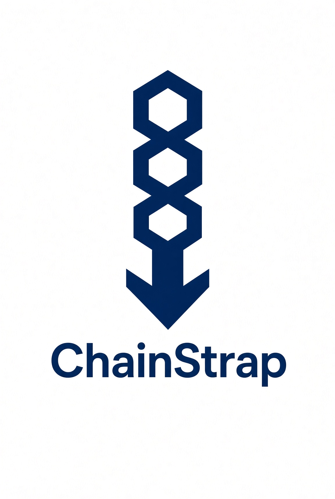

Sync a node in hours, not weeks.
ChainStrap publishes compressed snapshots of raw blockchain data to IPFS. One small Python script pulls a snapshot down, unpacks it into the right folder for your operating system, and hands the rest to your node — which verifies every block itself, exactly as it always would.

$ curl -O https://chainstrap.com/getchain.py $ python3 getchain.py RVN # ...then start your node. That's it.
Available chains
Every snapshot below is addressed by its IPFS content ID, so what you download is bit-for-bit what was published — and it comes from the IPFS swarm, not from us. A check mark means a testnet snapshot is published alongside mainnet.
Get started
getchain.py is a single file with no third-party dependencies — the
Python that ships with your OS is enough. If you run an IPFS daemon locally it
will use it; if not, it falls back to public IPFS gateways over plain HTTPS.
1 Stop your node, then fetch the script
$ curl -O https://chainstrap.com/getchain.py
2 Pull a chain
$ python3 getchain.py RVN # mainnet $ python3 getchain.py RVN --testnet # testnet $ python3 getchain.py --list # what's available
3 Start your node
Data lands in ~/.raven (or the equivalent for the chain you picked).
Launch the client normally and let it verify from there.
1 Quit your node, then fetch the script
$ curl -O https://chainstrap.com/getchain.py
2 Pull a chain
$ python3 getchain.py RVN # mainnet $ python3 getchain.py RVN --testnet # testnet
3 Start your node
Data lands in ~/Library/Application Support/Raven.
If macOS ships an older Python, install a current one from
python.org.
1 Install Python, close your wallet, then fetch the script
Get Python from python.org and tick Add python.exe to PATH during setup. Then, in PowerShell:
> curl.exe -O https://chainstrap.com/getchain.py
2 Pull a chain
> python getchain.py RVN # mainnet > python getchain.py RVN --testnet # testnet
3 Start your wallet
Data lands in %APPDATA%\Raven.
wallet.dat,
*.conf, or anything outside the block and chainstate folders — but a
backup of your wallet before any bulk operation is always the right habit.
How it works
Four moving parts, none of which require you to trust us with anything more than a starting point for your own node's verification.
A full node syncs
A machine we run stays fully synced on each chain the normal way — no shortcuts on the publishing side.
savechain.py packs it
Driven by each chain's config file, it stops the node, zips the block, index, chainstate and asset folders into ~2 GB parts, and adds them to IPFS.
IPFS distributes it
Each part gets a content ID. Anyone who has downloaded it can serve it. Popular snapshots get faster, and our bandwidth bill stays flat.
getchain.py unpacks it
It reads the same config, works out the right data directory for your OS, downloads the parts, and extracts them in place.
Trust & questions
Do I have to trust the snapshot?
Not for correctness. Your node re-derives everything: every transaction and
signature, every merkle root, every block header chained by proof-of-work back to
genesis. A bad snapshot gets rejected, not silently accepted. If you want the node
to redo that work over data it has already indexed, start it with -reindex.
What you are trusting is the script running on your machine — that it won't touch your wallet. It's one readable file with no dependencies, and reading it end to end takes a few minutes. Please do.
Do I need to install IPFS?
No. getchain.py checks for a local daemon on
127.0.0.1:5001 and uses it when present — that's the fastest and most
decentralized path. Otherwise it downloads over HTTPS from public IPFS gateways,
with resume support if the connection drops.
Running a daemon and pinning what you download makes the next person's download faster. That's the whole point.
Why is the snapshot split into parts?
Chain data runs to tens of gigabytes. Splitting it into roughly 2 GB zip parts keeps individual transfers recoverable — a failure costs you one part, not the whole download — and lets the parts spread across IPFS independently.
Which chains can this work with?
Any Bitcoin-derived client with the usual blocks /
chainstate layout, on mainnet or testnet. Support for a chain is a
config file describing its data directory per OS, its testnet subfolder, and which
folders to pack — no code changes. Adding one is a pull request.
How current are the snapshots?
Publishing runs on a daily cron. Each row above shows the block height captured and when it was published; your node syncs the remaining blocks from the network on its next start.